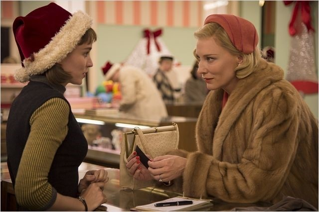

1.주연배우:케이트 블란쳇,
루니 마라
2.줄거리:그리고 시간은 두 사람이 처음 마주친 과거로 거슬러 올라갑니다
1950년대, 크리스마스를 앞둔 맨하튼의 백화점은 아이들을 위한 장난감을 사러 온 손님들로 북적이고
직원 테레즈는 쏟아져들어온 수많은 손님 중 어쩐지 시선을 잡아끄는, 고혹적 분위기의 여자를 발견합니다

우아한 차림으로 기차모형을 물끄러미 바라보던 캐롤의 시선도 테레즈 쪽을 향하고
두 사람은 짧은 순간이지만 서로에게서 시선을 돌릴 줄 모릅니다
4살짜리 딸아이의 선물을 사러 온 캐롤은 아이가 갖고 싶어했던 인형은 이미 품절이라는 테레즈의 설명을 듣고
그럼 4살때 어떤게 제일 갖고 싶었냐고 테레즈에게 물어보자, 그녀는 기차모형이 정말로 갖고 싶었다고 말합니다
캐롤은 기차모형을 구매하고, 배송을 위해 자신의 이름과 주소를 적고 백화점을 빠져 나가죠
기차모형을 구매한날, 캐롤이 잊고 간 장갑을 테레즈가 돌려준 일을 계기로 두 사람은 사적인 만남을 가지게 되고
두 사람은 서로에게 강한 끌림을 느끼죠
캐롤은 테레즈에게 "당신은 하늘에서 떨어진 사람같아요" 라고 말합니다
3.후기: '인생에 단 한 번, 오직 그 사람만 보이는 순간이 있다'고 했지만, 첫만남인 백화점 씬외에도 마지막 재회 장면에서도 두 사람은 서로만을 응시하고 있네요
가슴이 절절할 정도로 강렬하고 뜨겁게 두 배우분의 연기가 틈도 없이 꽉 맞물리는 느낌이라고 해야하나
단지 서로 시선이 닿은 것 만인데도 그 간절한 그리움과 사랑하는 마음이 느껴지게 연기하고, 연출된게 정말 좋았어요
영화는 정말 화면도 아름답고, 둘이 마주칠때 흘러나오는 음악도 아름답고, 그녀들의 섬세한 감정선도 아름답고 정말 좋은 영화인데
다만, 아주 극적인 전환 장면이나 반전, 빠르고 신나는 음악 이런 것들이 포함되어 있지 않다보니 보다가 지루함을 느끼실 분들도 있을 것 같습니다
같은 아트하우스 영화여도 '버드맨' 류의 취향의 관객들 보다는 '보이후드' '대니쉬걸' 류의 영화를 좋아하시는 분들께 권해드리고 싶어요 !